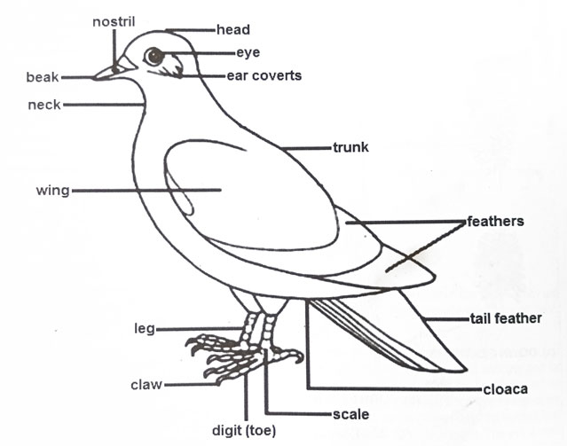

Diagram of a bird
| Bacterial Cell | Yeast Cell |
|---|---|
| Prokaryotic | Eukaryotic |
| No true nucleus; DNA is in a nucleoid region. | Has a true nucleus enclosed by a nuclear membrane. |
| Cell wall is composed of peptidoglycan. | Cell wall is composed of chitin |
| Capsule present | Capsule absent |
| Ribosomes are smaller (70S). | Ribosomes are larger (80S). |
| Flagella present | Flagella absent |
| Mitochondria absent | Mitochondria present |
| Reproduction is by binary fission. | Reproduction is by budding |
| Relatively smaller. | Relatively larger. |